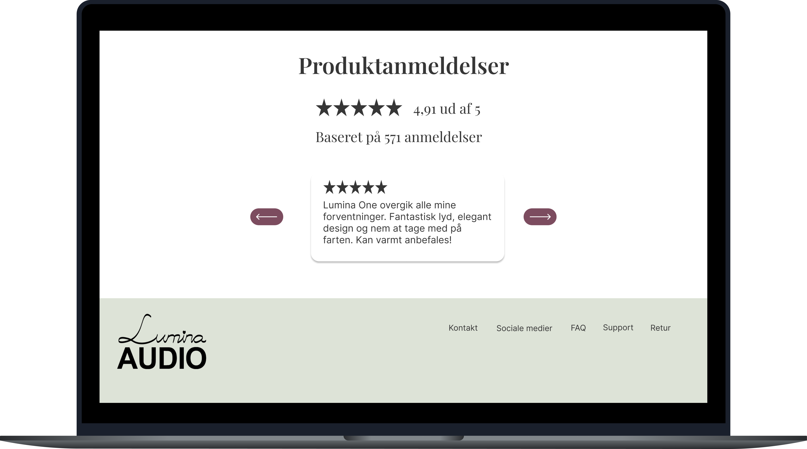
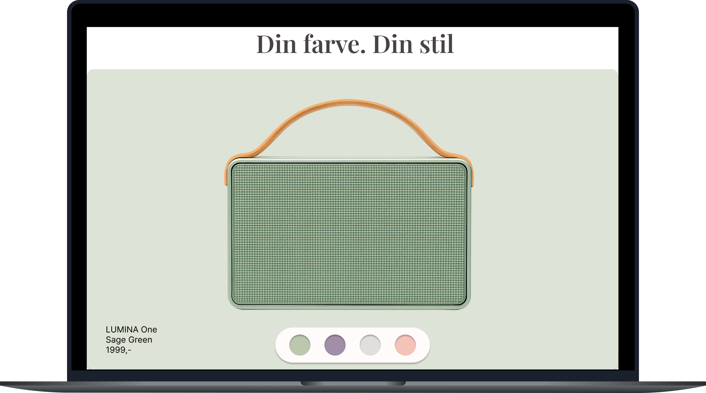

Lumina Audio
Jeg redesignede LUMINA Audio med fokus på at gøre siden mere enkel, rolig og produktfokuseret. Jeg ville gerne skabe en webshop, hvor produktet får lov til at fylde, uden at siden føles tom eller kedelig.

Udfordringen
Lumina Audio er en fiktiv virksomhed, der sælger minimalistiske højttalere. Den oprindelige landingpage havde et ret tungt visuelt udtryk, og jeg syntes ikke, at produktet fik den opmærksomhed, det burde. Der var ikke et helt tydeligt hierarki, og det var derfor ikke altid klart, hvad man som bruger skulle se på først. Jeg ville især gerne skabe en bedre balance mellem det visuelle og det funktionelle. Siden skulle stadig føles som LUMINA Audio, men samtidig være nemmere at navigere i og mere indbydende at bruge.
En anden del af udfordringen var at få designet til at fungere på forskellige skærmstørrelser. Derfor tænkte jeg responsivitet ind allerede i designfasen, i stedet for først at tilpasse siden bagefter. Mit mål blev derfor at skabe en løsning, hvor produktet er tydeligt i fokus, navigationen føles naturlig, og designet hænger sammen fra første klik til den færdige interaktion.
Processen
Jeg startede med at undersøge andre brands inden for lyd og livsstil for at finde ud af, hvilket visuelt udtryk der passede til LUMINA Audio. Jeg arbejdede især med farver, typografi, produktbilleder og den måde, produkterne blev præsenteret på. Herefter byggede jeg wireframes for at få styr på sidens struktur og hierarki, inden jeg begyndte på det visuelle design. I Figma arbejdede jeg videre med farver, typografi og layout og testede forskellige måder at fremhæve produktet på. Til sidst tilpassede jeg designet til mindre skærme og gjorde de vigtigste elementer interaktive i den færdige løsning.
- Moodboard og research i nordiske produktbrands
- Wireframing af sidens struktur og hierarki
- Valg af farver og typografi
- Design i Figma
- Responsivt design til mobil og tablet
Resultatet
Resultatet blev en mere enkel og sammenhængende webshop, hvor produktet er i fokus, og hvor brugeren hurtigt kan forstå siden. Jeg tilføjede også interaktioner som farvevalg, kurv og anmeldelser for at gøre oplevelsen mere levende.

